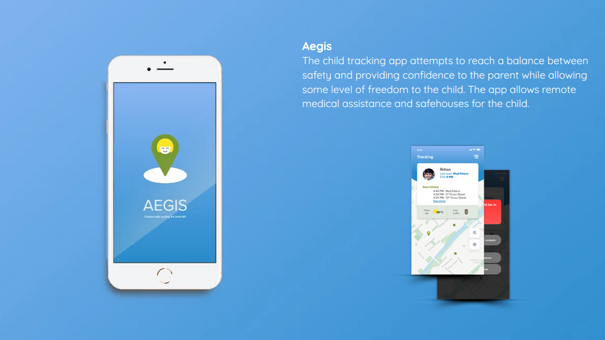
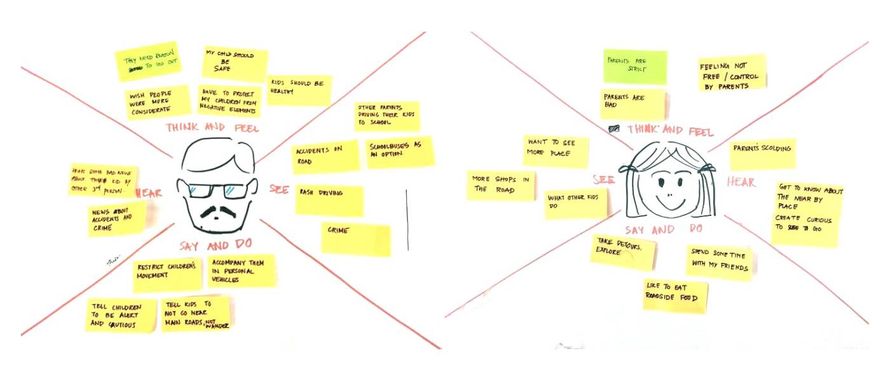
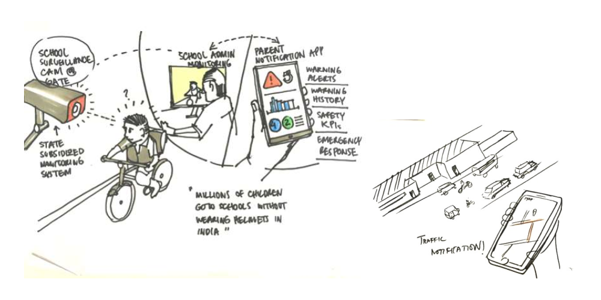
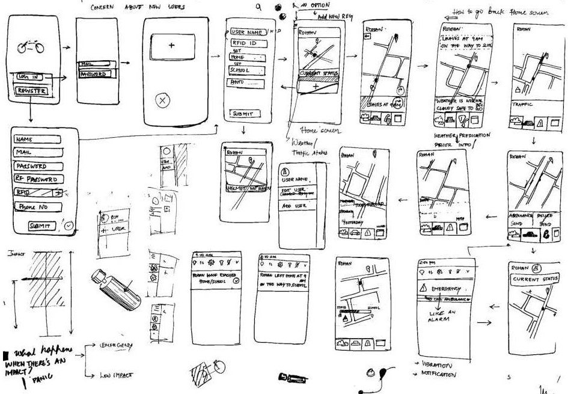
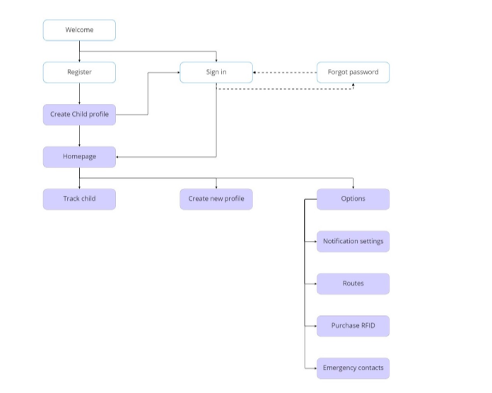
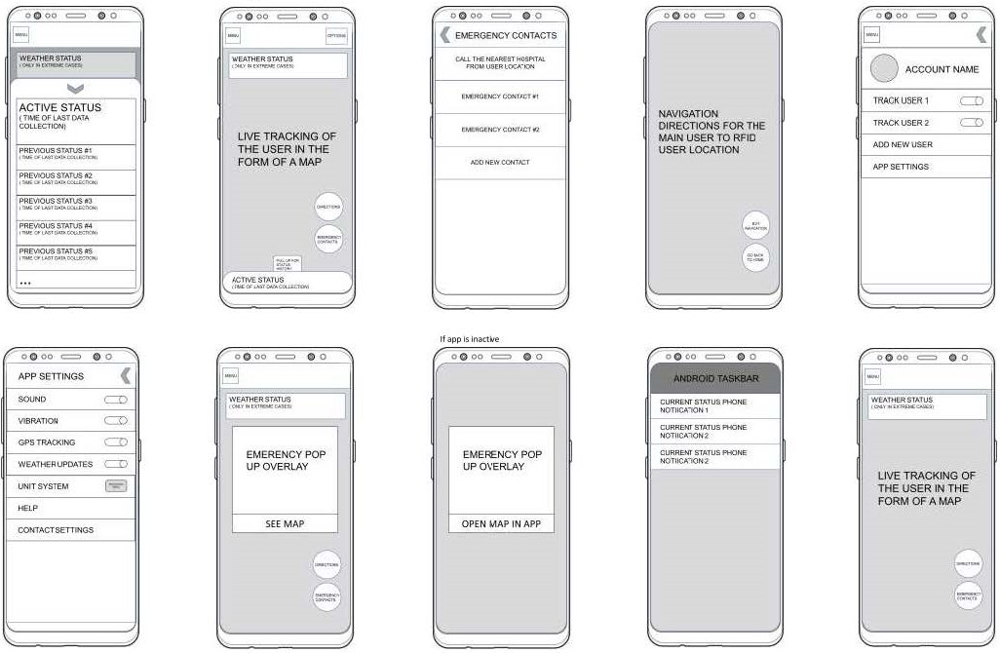
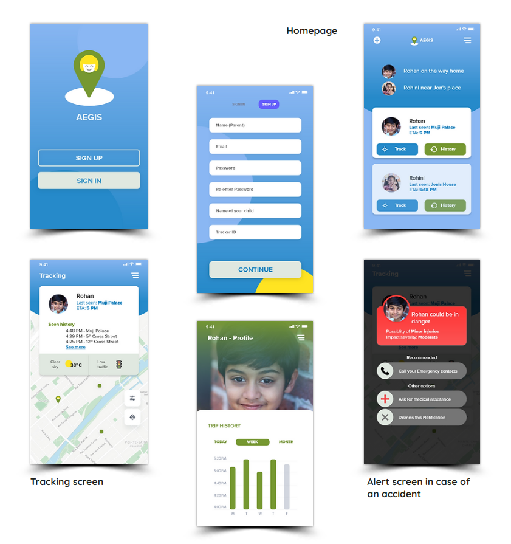
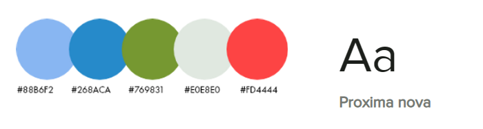

Team
Veera Manoharan and team
Tools
Adobe XD
Photoshop
Timeline
Two weeks
2023
Brief
As a part of the National Institute of Design's UI/UX curriculum, I joined a team of three to redesign an app targeting urban cycling safety for school children. The project, under the theme "Urban Arcadia," spanned over two weeks and aimed to address the critical question:
How might we
encourage safe cycling to schools and short-distance commutes?
Problem
Our preliminary research, which included interactions with school kids and parents and a review of existing research reports, uncovered an alarming number of road accidents involving young cyclists. Parents' fear for their children's safety emerged as a significant deterrent to encouraging cycling as a mode of transport. This understanding led us to focus on road safety for children.
Goals
Create an application that provides parents with peace of mind while allowing the child a sense of freedom. The app includes features like remote medical assistance and safehouses for the child. 
User Research and Synthesis
To understand our users' needs, we created empathy maps for two primary personas - Parents and Children. We
also compiled input from research and sythesised insights from it using Affinity mapping. This helped us
understand their motivations and frustrations, enabling us to design a solution addressing their
needs.
Affinity Map
helped us group related research findings and ideas, enabling us to identify user needs and
objectives, guiding our design process.

Empathy Map was used to gain insights into our users' behaviors and attitudes, leading to more informed design decisions. 
Key insights:
Parents: Excessive anxiety when their child doesn't return home on time.
Children: Need to feel safe during their trips, a bad experience can discourage them
from
cycling in the future.
We identified several barriers to safe cycling:
1. Unpredictability of traffic movement.
2. Lack of information about optimal routes and current traffic conditions.
3. High vulnerability to road accidents.
Ideation and Design
The scenario sketches played a pivotal role in our design process. We used them as a tool to dive deeper
into our users' world, exploring various contexts and situations where our app could be beneficial. Starting
from empathy maps, we built scenarios to simulate user journeys, identifying both pain points and
opportunities.

These sketches enabled us to visualize potential solutions and interactions within the users' everyday lives
before developing the screen designs. In doing so, they ensured our design decisions remained
contextually relevant.
Through sketching, we were able to quickly iterate and test different concepts. This helped us visualize
user navigation and identify potential issues. After team discussions, we finalized the concepts to be
carried forward in the design process

The Solution
Our initial concept was a blend of a physical product, a GPS-based cycle lock, and a mobile
application. The lock would unlock if the user wore a helmet with a registered RFID tag and would alert
parents in case of an accident. Initial sketches were low-fidelity and focused on functionality
and layout. This phase allowed us to quickly iterate, visualize user flow, and decide on the concepts to be
taken to the next design phase.
To provide a seamless and intuitive user experience, we developed:
Information Architecture: This formed the backbone of our app, structuring user
interactions and information
flow.

Low-Fidelity Mockups: These helped visualize the presentation of information and
user-required
interactions.It was also used to get feedback and testing to evaluate the usability of the product

Iterations and Refinements
Based on various feedback from sample users, peers + mentor feedback, some concerns were raised:
1. The product was complicated and unintuitive.
2. There was a risk of false positives from sensor interactions.
3. The inability to track users not wearing a helmet.
We addressed these issues by removing the helmet requirement and implementing a feature that alerts parents
if a fall is detected with no subsequent movement.
Final design
Our final design encapsulates the essence of our research and iterations:
Card Layout: Important information is displayed using cards, focusing on one task at a
time.
Safehouses: Landmarks and locations are visually indicated as safe areas for the child.
Emergency Assistance: Users can directly request help during emergencies.

Given the primary users were parents and their children, we wanted to ensure the palette was both welcoming
and trustworthy. We chose a palette that was vibrant yet comforting, leveraging primary colors with a modern
twist. We also wanted the type to convey a similar aesthetic, hence we chose

Color: We chose a calming palette to convey a sense of security and comfort.
Typography: We used Proxima Nova, known for its readability and modern aesthetics.
Final design
This project was an enlightening journey through the UX/UI design process. It highlighted the importance of user-centric design, iterative development, and the invaluable role of user feedback. My skills in problem-solving and decision-making were honed, further enriching my understanding of the nuanced relationship between UX and UI design.